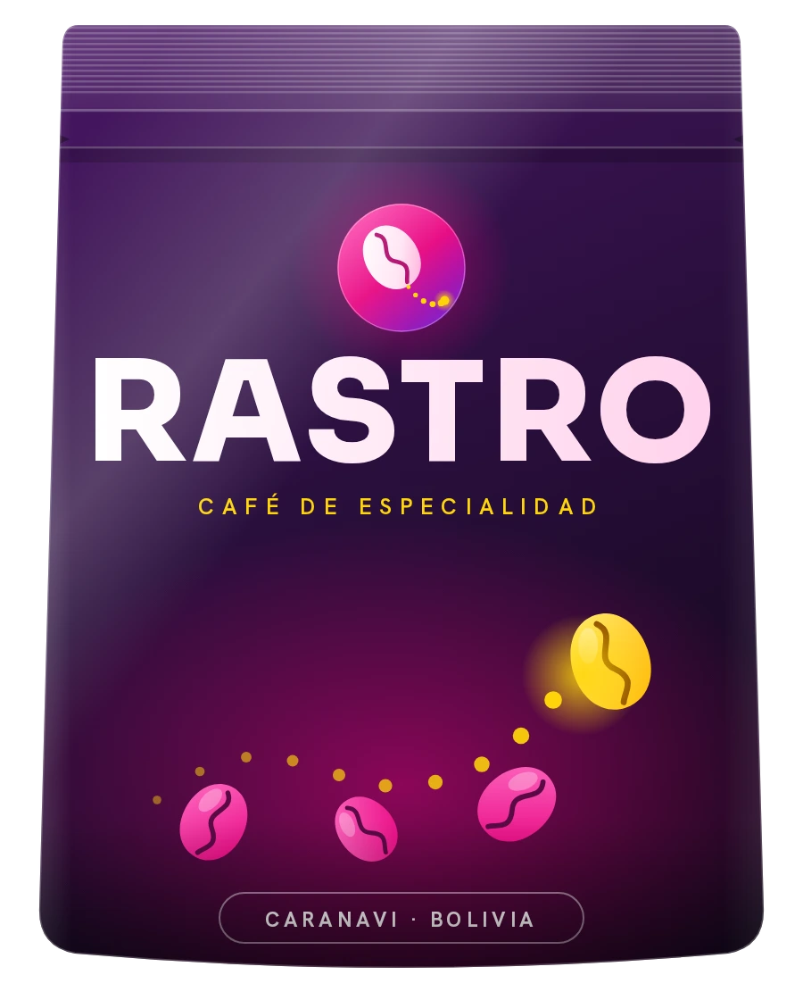

Cada café deja un rastro.
Sigue el camino de este lote desde la finca en las montañas de Caranavi hasta la taza que tienes en la mano.

Tu lote
Elige un lote para ver su ruta y sus datos.
De la finca a tu taza
Confirmado
Por confirmar
Prepáralo bien
Elige tu método, ajusta la dosis y sigue el temporizador paso a paso. Son recetas base: parte de aquí y ajusta a tu gusto.
0:00
Llévate este lote
La compra se completa en rastrotienda.cl. Cada lote viene en 125 g o 250 g, con la molienda que prefieras.
Moliendas: grano entero (recomendado), gruesa (francesa), media (V60) y fina (espresso doméstica).